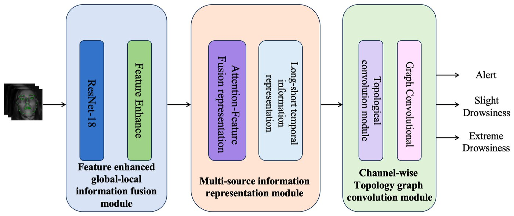

Dynamic map (DM) is a core information infrastructure for vehicle-road-cloud (VRC) cooperative autonomous driving. It fuses perception data from multiple sources to overcome the inherent line-of-sight and field-of-view limits of single-vehicle perception.
However, DM still falls short on driving safety in two ways. First, DM data specifications already define road conditions semantically, but no pipeline yet turns real-world road observations into fine-grained risk entities in the DM.
Second, existing DM systems lack a natural language interface for driving risks. To close these gaps, we propose Safety4DM, a safety-oriented language system for VRC dynamic maps.
We first build RoadRisk, a real-world road image dataset that covers four types of road conditions and four risk levels. On this dataset, we fine-tune a vision-language model (VLM) for road safety risk perception. The model outputs structured risk representations that the DM can ingest directly.
We then introduce a Safety-aware Step-wise Prompting (SafeStep) mechanism as the natural language query interface of the DM. SafeStep answers queries accurately and also generates actionable driving advice.
To build and evaluate this interface, we develop SafeVRC-Sim, a VRC cooperative simulation framework, and SafeDM-QA, a safety question-answering benchmark.
Experiments show that even the compact Qwen3-VL-4B reaches 89.83% accuracy on risk perception after fine-tuning. SafeStep also plugs easily into multiple LLM families. With medium and large models (20B and above) from five families, it achieves over 93% natural language query accuracy in every case, which shows strong generalization.
IEEE Internet of Things Journal新锐 1 区 Top · IF 8.9第二轮审稿中学生第一作者
Knowledge-Guided Floodwater Level Reasoning for Cloud-Edge Collaborative Monitoring
知识引导的积水等级推理与云边协同监测（HydroReasoner）
Zhengshu Zhou, Shaoyu Wang, Ziyi Geng, Lu Tao, Qian Long
Frequent urban floodwater poses a serious threat to the safety and efficiency of intelligent transportation systems.
Existing vision-based methods for floodwater level detection face two main limitations. First, the lack of explicit reasoning leads to poor detection performance and little interpretability.
Second, these methods struggle to generalize to the complex and varied real-world road scenes seen from different viewpoints.
To address this, we reformulate the task as an explicit visual reasoning problem and propose HydroReasoner, a floodwater level reasoning framework designed for cloud-edge collaboration.
HydroReasoner builds on Qwen2.5-VL and is trained with Group Relative Policy Optimization. To address the scarcity of reasoning process annotations, we build a floodwater domain knowledge graph HydroKG and design a novel KG path reward.
Through deterministic graph traversal over HydroKG, this reward supervises the model's reasoning process at a fine granularity, which improves both reasoning and generalization.
For edge deployment, we apply 4-bit quantization to the model, cutting GPU memory usage by 57% and inference latency by 43% while out-of-domain accuracy drops by only 0.2 percentage points.
We also propose a confidence-based cloud-edge routing mechanism, which improves system safety and eases the computational load on the cloud.
In addition, we build HydroLevel, a floodwater benchmark dataset of 3,000 images, for training and evaluating the model.
Experimental results show that HydroReasoner achieves detection accuracy 4.0 and 13.6 percentage points higher than conventional vision baselines in the in-domain and out-of-domain evaluations respectively, with performance dropping by only 4.4 percentage points out of domain.
其他论文 Other Publications
作者按原署名顺序列出，本人姓名加粗。

IEEE T-ITS 2026新锐 1 区 Top · IF 9.1已录用学生第二作者
FE-CTGCN: Topology Channel Graph Convolution Network Based on Feature Enhancement for Drowsiness Driving Detection